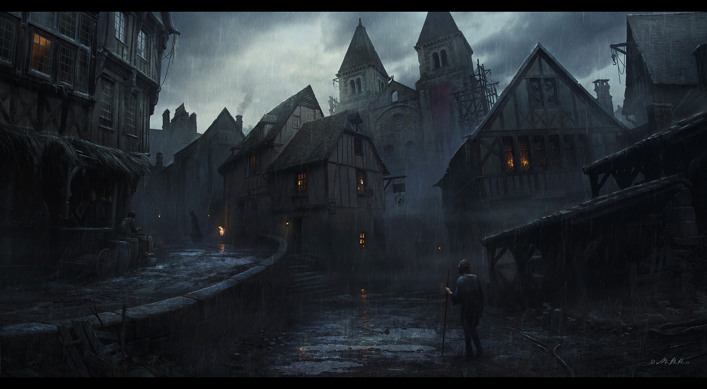

CarloEn los recónditos dominios del Cenit Sombrio, donde la magia y la oscuridad entrelazan sus destinos, emerge la figura enigmática de Carlo. Conocido como el "Errante", este viajero personifica la intriga y el poder que se oculta tras las murallas de esta nación. Las habladurías lo vinculan frecuentemente con la capital del reino. Se dice que Carlo deambula por callejones en penumbra y rincones oscuros, como si estuviera en sintonía con las fuerzas místicas que laten en el corazón de la ciudad. Su presencia se ha convertido en parte integral de la trama urbana, un hilo invisible que conecta los callejones con los secretos susurrados en los salones de la élite. Como visitante asiduo de la capital, Carlo ha dejado tras de sí un rastro de conjeturas y especulaciones. Los ciudadanos comentan sobre su conexión con los poderes que gobiernan el Cenit, sugiriendo que su influencia puede alterar el transcurso de los eventos que se gestan entre las mas altas torres y pasadizos. A pesar de su aura enigmática, Carlo parece tener la habilidad de transitar entre las altas esferas y los marginados por igual. Su presencia se manifiesta con un aura de susurros profundos y sombras danzantes, como si el propio reino reconociera su llegada como un desencadenante de secretos ocultos. |
||||||||||||||||||
| Personalidad |
|---|

'Busco las respuestas que la luz nunca me revelaría' - Carlo, el Errante. La personalidad de Carlo es tan enigmática como su presencia. Posee una calma que raya en lo inmutable, como si las corrientes de la vida apenas pudieran rozar la superficie de su ser. Su mirada profunda, siempre ligeramente velada, parece contener siglos de conocimiento y experiencias insondables. Carlo es un observador silencioso, siempre atento a los matices y a las sombras que danzan a su alrededor. Esta actitud reflexiva se combina con una paciencia infinita, como si estuviera esperando el desenlace inevitable de los hilos del destino que él mismo ha tejido. En su presencia, se percibe una quietud que contrasta con la turbulencia de la oscura realidad que habita. A pesar de su aura sombría, Carlo muestra una astuta inteligencia y una capacidad estratégica notable. Sus palabras, escasas pero ponderadas, revelan un pensamiento profundo y una comprensión aguda de los intrincados entresijos del Reino Cenit Sombrio. Es reservado con respecto a sus propios motivos y objetivos, revelando solo lo necesario para mantener el velo de misterio que lo envuelve. Si bien su presencia puede infundir temor, también emana un carisma magnético que atrae a aquellos que buscan respuestas o guía en la oscuridad. Algunos lo ven como un consejero sabio, capaz de desentrañar verdades ocultas, mientras que otros temen el poder que parece yacer bajo la superficie de su ser. Sin embargo, ninguno de ellos jamas logra reunir el corazon suficiente como para acercarse a su figura. |
| Historia |
|---|
Capitulo 1: Hambre.

La vida en los suburbios nunca era facil. Carlo recordaba los imponentes muros de los suburbios. El aroma a hierro, humedad y sangre se había impregnado en su nariz, una fragancia que aún llevaba consigo a cada paso. Siempre se deslizaba entre los callejones como si fueran capítulos de un cuento antiguo que solo él podía leer. Las sombras se convertían en sus fieles amigas, y cada paso resonaba con la danza sigilosa de sus pisadas sobre el pavimento desgastado. No era mas que un crio cuando prendió a leer los susurros de los vientos entre los edificios en ruinas, interpretando ellamento de una ciudad que olvidaba a sus hijos más desfavorecidos. Las noches, teñidas de un manto de estrellas, se convertían en su refugio, y sus pensamientos, las voces de su cabeza, en su unico acompanante.. Las noches, teñidas de un manto de estrellas, se convertían en su refugio. La luna, testigo de sus travesías clandestinas, arrojaba destellos plateados sobre su figura esquiva. Las cicatrices de la infancia se volvían sombras alargadas en las paredes, recordándole su resistencia a la adversidad. Carlo, desde joven, entre los callejones que se curvaban como laberintos, encontró la lección más dura pero invaluable: la supervivencia. Cada encuentro con la crudeza de la vida habia tejido un hilo más en su destino, formando el tapiz de un niño desamparado que aprendió a desafiar la oscuridad, no temiéndole, sino utilizándola como su propio velo protector. Así, entre el susurro de las noches sin luna y el eco lejano de una ciudad que parecía olvidar a sus hijos perdidos, Carlo, el Errante, emergió como un narrador de su propio destino, escribiendo capítulos de resistencia en las páginas del Cenit Sombrio. ...pero, en la penumbra de su mirada, ardió un hambre insaciable, no de pan ni agua, sino de algo más oscuro y etéreo. Un apetito voraz que devoraba la complacencia, una sed inextinguible que absorbía las sombras del mundo para nutrir su insondable sed de conocimiento y poder. En la maraña de sus cicatrices, el hambre de Carlo se volvía un eco ominoso, una llama que ardía en los recovecos más profundos de su ser, preludio de un destino cuyos contornos aún se desdibujaban en la trama su historia. |